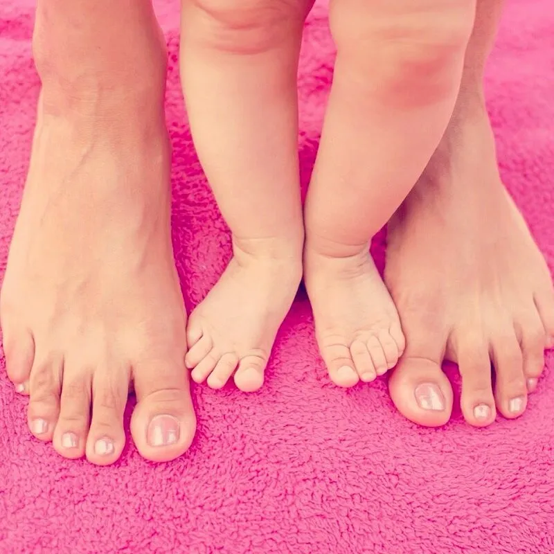

¿Te has preguntado porqué las clases de yoga se realizan a pies descalzos?
Nuestros pies resultan ser la base de nuestro cuerpo, mediante la cual tomamos contacto con la madre tierra.
Al momento de caminar descalzos estamos restableciendo nuestro flujo energético, ya que mediante las terminaciones nerviosas que se encuentran en las plantas, estamos realizando el proceso de descargar y recibir.
Al realizar nuestras prácticas a pies descalzos, estamos permitiéndonos conectar con la tierra, aumentando así nuestra vitalidad y favoreciendo una buena salud.
En el yoga, los pies resultan ser una parte del cuerpo, a la cual es necesario prestar mucha atención y conciencia, ya que sus movimientos repercuten en todo el resto del cuerpo físico. Como en las plantas se sitúan aquellos puntos energéticos, estos son masajeados cada vez que estamos realizando una asana o un desplazamiento. Aquellas terminaciones nerviosas producen endorfinas, neurotransmisores del placer.
Los pies son el cimiento para la construcción asertiva del asana, invitándonos a la toma de conciencia total en torno a sus funciones.
Los mismos beneficios que recibimos nosotros/as como adultos/as al liberar nuestros pies, ocurren también en la infancia:
- Mejora de la circulación sanguínea.
- Favorece las funciones del sistema inmune.
- Disminuye estrés y ansiedad.
- Elimina contaminación electromagnética no deseada.
- Fortalece columna vertebral.
- Permite mayor rango de movimiento… entre otros beneficios más.
Es importante considerar que todo lo descrito, es tomando en cuenta escenarios idóneos para ello, tales como el pasto, la playa, la tierra o en tu clase de yoga infantil donde el piso tiene todas las condiciones necesarias.
¿Cómo hacerlo en tu clase de yoga?
-
Automasajes: Mediante el uso de aceite de masajes, cremas o elementos como pelotas, plumas, masajeadores, etc.
-
Masaje en duplas: Uno de ellos se recuesta, mientras el otro se encarga de masajear sus pies con algún elemento nombrado anteriormente.
-
Masajes en la espalda del compañero con los pies: Uno de ellos se tumba boca abajo, mientras el compañero se encarga de recorrer su espalda con uno de sus pies.
-
Caminatas sobre texturas: Situar en diversos contenedores, arena, tierra, piedras. telas, harina, lana, entre otros, para que los niños/as puedan pisar y descubrir las diferencias.
-
Recoger bolitas de algodón con los pies: Sitúas por toda la sala, bolitas de algodón para que ellos y ellas se encarguen de recogerlas pero sólo utilizando sus pies, hasta depositarlas en una caja que hayas destinado para ello.
-
Pintar con los pies: Crear mandalas, dibujar sus asanas preferidas y todo lo que se te ocurra, pero esta vez utilizando sólo los pies.
-
Dibujar sus pies: Una manera de concientizar, es que puedan dibujarlos en una cartulina siguiendo la silueta para más tarde rellenarlos con diversos elementos.